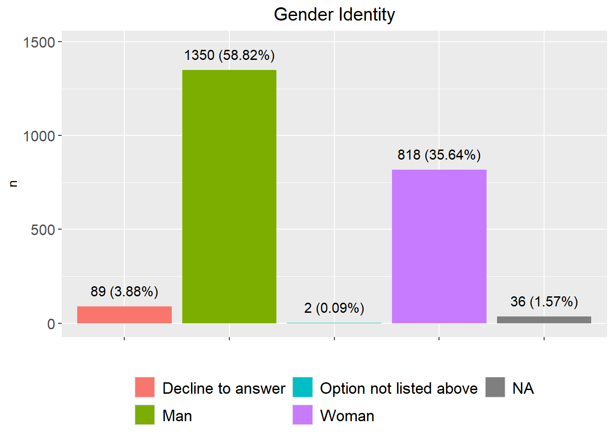
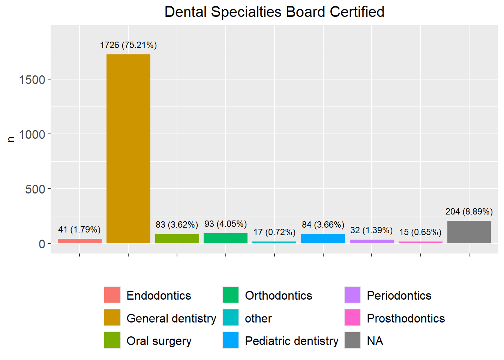
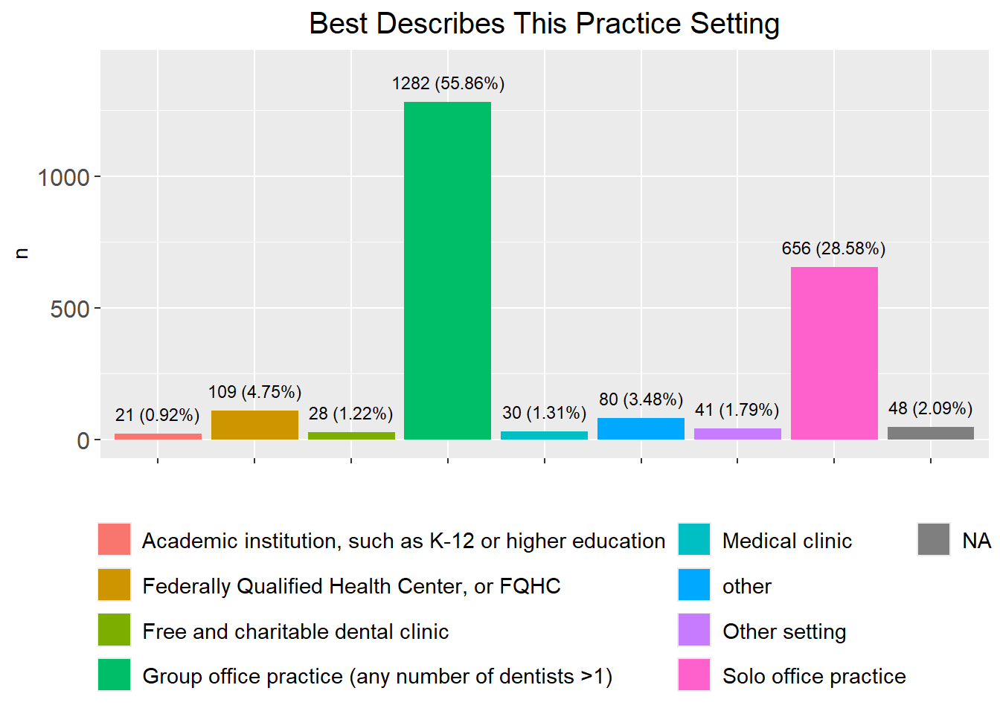
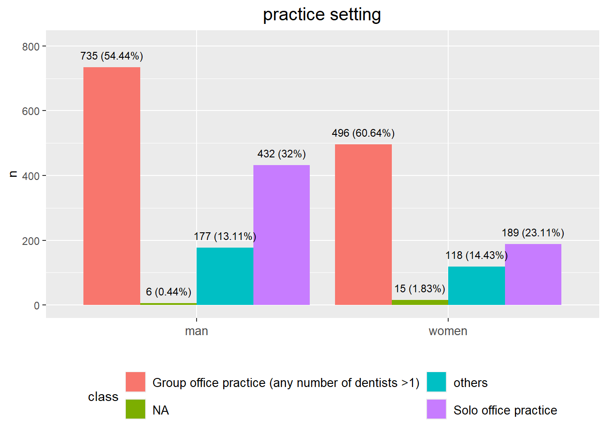
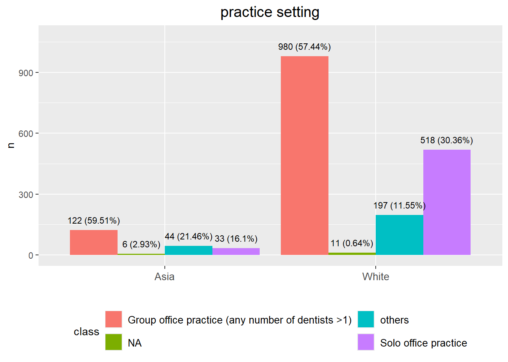
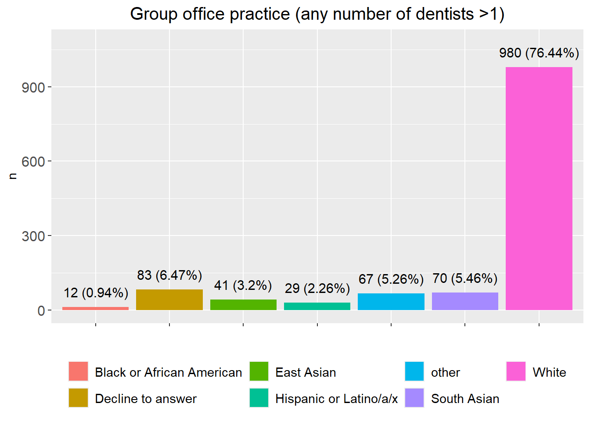
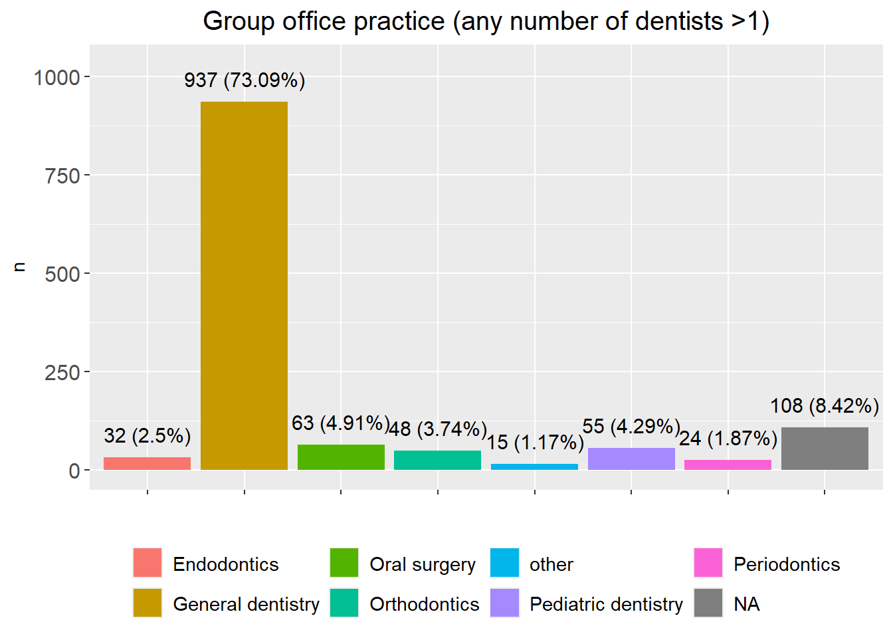
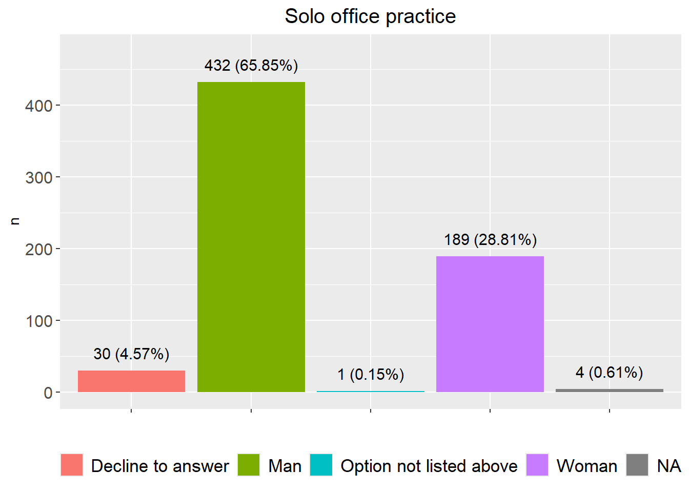
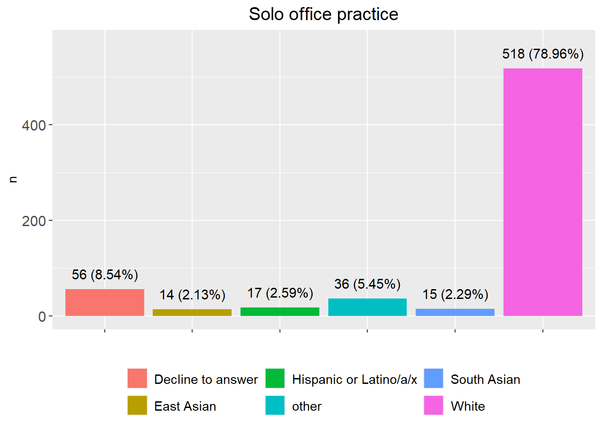
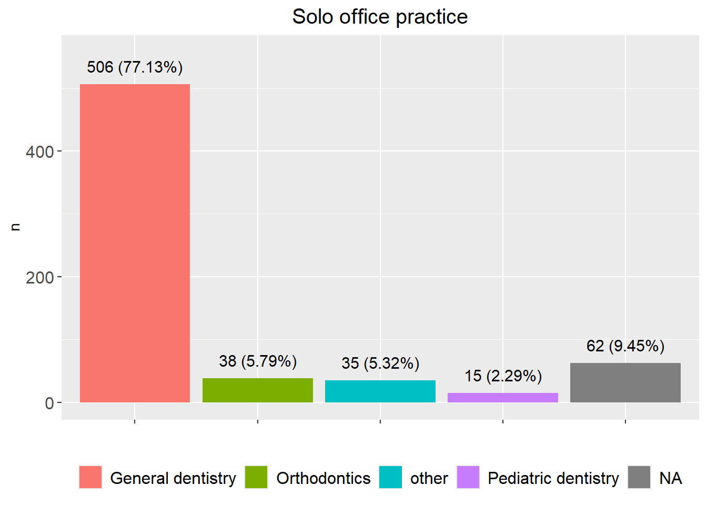

Last updated: 2025-04-24
Checks: 6 1
Knit directory: WI_Dental_Survey/
This reproducible R Markdown analysis was created with workflowr (version 1.7.1). The Checks tab describes the reproducibility checks that were applied when the results were created. The Past versions tab lists the development history.
The R Markdown file has unstaged changes. To know which version of
the R Markdown file created these results, you’ll want to first commit
it to the Git repo. If you’re still working on the analysis, you can
ignore this warning. When you’re finished, you can run
wflow_publish to commit the R Markdown file and build the
HTML.
Great job! The global environment was empty. Objects defined in the global environment can affect the analysis in your R Markdown file in unknown ways. For reproduciblity it’s best to always run the code in an empty environment.
The command set.seed(20250423) was run prior to running
the code in the R Markdown file. Setting a seed ensures that any results
that rely on randomness, e.g. subsampling or permutations, are
reproducible.
Great job! Recording the operating system, R version, and package versions is critical for reproducibility.
Nice! There were no cached chunks for this analysis, so you can be confident that you successfully produced the results during this run.
Great job! Using relative paths to the files within your workflowr project makes it easier to run your code on other machines.
Great! You are using Git for version control. Tracking code development and connecting the code version to the results is critical for reproducibility.
The results in this page were generated with repository version 05d3575. See the Past versions tab to see a history of the changes made to the R Markdown and HTML files.
Note that you need to be careful to ensure that all relevant files for
the analysis have been committed to Git prior to generating the results
(you can use wflow_publish or
wflow_git_commit). workflowr only checks the R Markdown
file, but you know if there are other scripts or data files that it
depends on. Below is the status of the Git repository when the results
were generated:
Ignored files:
Ignored: .Rhistory
Ignored: analysis/figure/
Unstaged changes:
Modified: analysis/2024_0701_survey_part3.Rmd
Note that any generated files, e.g. HTML, png, CSS, etc., are not included in this status report because it is ok for generated content to have uncommitted changes.
These are the previous versions of the repository in which changes were
made to the R Markdown
(analysis/2024_0701_survey_part3.Rmd) and HTML
(docs/2024_0701_survey_part3.html) files. If you’ve
configured a remote Git repository (see ?wflow_git_remote),
click on the hyperlinks in the table below to view the files as they
were in that past version.
| File | Version | Author | Date | Message |
|---|---|---|---|---|
| Rmd | 05d3575 | han | 2025-04-23 | 4/23/2025 |
#Dentist_Survey=multiplesheets(file.path(root, "..\\2024\\202407\\state_survey\\Dentist Survey.xlsx"))
Dentist_Survey=multiplesheets("C:\\Shengtong\\Research\\AllCollaboration\\2024\\202407\\state_survey\\Dentist Survey.xlsx")
Dentist_in_WI=Dentist_Survey$`Dentist Survey` %>% filter(`direct care as a dentist in Wisconsin`=="Yes")
#save(Dentist_in_WI, file="C:\\Shengtong\\Research\\AllCollaboration\\2024\\202407\\Dentist_in_WI.RData")direct care as a dentist in Wisconsin#dim(Dentist_Survey$`Dentist Survey`)
load("C:\\Shengtong\\Research\\AllCollaboration\\2024\\202407\\Dentist_in_WI.RData")
variables=colnames(Dentist_in_WI)
data.frame(questions=variables)%>%
datatable(extensions = 'Buttons',
caption = "",
options = list(dom = 'Blfrtip',
buttons = c('copy', 'csv', 'excel', 'pdf', 'print'),
lengthMenu = list(c(10,25,50,-1),
c(10,25,50,"All"))))cat("total number of dentist:", nrow(Dentist_in_WI), "\n")total number of dentist: 2295 variables_of_interest=variables[-c(6,7,19:37)]
dentist_in_WI_of_interest=Dentist_in_WI[,-c(6,7,19:37)]
num_non_missing=apply(dentist_in_WI_of_interest,2, function(x) sum(is.na(x)==F) )
data.frame(variable=variables_of_interest, non_missing=num_non_missing)%>%
datatable(extensions = 'Buttons',
caption = " Interesting variables with non-missing numbers ",
options = list(dom = 'Blfrtip',
buttons = c('copy', 'csv', 'excel', 'pdf', 'print'),
lengthMenu = list(c(10,25,50,-1),
c(10,25,50,"All"))))date_of_birth=dentist_in_WI_of_interest$`Date of Birth`
year_of_birth=str_sub(date_of_birth, nchar(date_of_birth)-3, nchar(date_of_birth))
ages=2024-as.numeric(year_of_birth)
dentist_in_WI_of_interest1=dentist_in_WI_of_interest %>% mutate(ages=ages)gender=dentist_in_WI_of_interest1 %>% dplyr::count(`Gender Identity`) %>% mutate(prop=round(n/nrow(dentist_in_WI_of_interest1),4))
fig=plot_function("Gender Identity", gender, legend_rows = 2, var_name = "Gender Identity", num_size = 4, legend_text_size = 13, custom_colors = NULL)
fig
gender%>% arrange(desc(n))%>%
datatable(extensions = 'Buttons',
caption = "",
options = list(dom = 'Blfrtip',
buttons = c('copy', 'csv', 'excel', 'pdf', 'print'),
lengthMenu = list(c(10,25,50,-1),
c(10,25,50,"All"))))binom.test(gender %>% filter(`Gender Identity`=="Man"| `Gender Identity`=="Woman") %>% select(n) %>% pull())
Exact binomial test
data: gender %>% filter(`Gender Identity` == "Man" | `Gender Identity` == "Woman") %>% select(n) %>% pull()
number of successes = 1350, number of trials = 2168, p-value < 2.2e-16
alternative hypothesis: true probability of success is not equal to 0.5
95 percent confidence interval:
0.6019049 0.6431503
sample estimates:
probability of success
0.6226937 stopifnot(sum(gender$n)==2295)specialty=dentist_in_WI_of_interest1 %>% dplyr::count(`Dental Specialties Board Certified`) %>% mutate(prop=round(n/nrow(dentist_in_WI_of_interest1),4))
specialty2=specialty %>% filter(n>10) %>% add_row(`Dental Specialties Board Certified`="other", n=specialty %>% filter(n<=10) %>% select(n) %>% sum(), prop=specialty %>% filter(n<=10) %>% select(prop) %>% sum()) # aggregate categories with n<=10
fig=plot_function("Dental Specialties Board Certified", specialty2, legend_rows = 3, var_name = "Dental Specialties Board Certified", legend_text_size = 12, custom_colors = NULL)
fig
specialty2%>% arrange(desc(n))%>%
datatable(extensions = 'Buttons',
caption = "",
options = list(dom = 'Blfrtip',
buttons = c('copy', 'csv', 'excel', 'pdf', 'print'),
lengthMenu = list(c(10,25,50,-1),
c(10,25,50,"All"))))stopifnot(sum(specialty2$n)==2295)other aggregates categories with less than 10
responses, such as General dentistry; Oral surgerypractice_setting=dentist_in_WI_of_interest1 %>% dplyr::count(`Best Describes This Practice Setting`) %>% mutate(prop=round(n/nrow(dentist_in_WI_of_interest1),4))
threshold=20
practice_setting2=practice_setting %>% filter(n>threshold) %>% add_row(`Best Describes This Practice Setting`="other", n=practice_setting %>% filter(n<=threshold) %>% select(n) %>% sum(), prop=practice_setting %>% filter(n<=threshold) %>% select(prop) %>% sum()) # aggregate categories with n<=10
fig=plot_function("Best Describes This Practice Setting", practice_setting2, legend_rows = 4, var_name = "Best Describes This Practice Setting", custom_colors = NULL)
fig
practice_setting2%>% arrange(desc(n))%>%
datatable(extensions = 'Buttons',
caption = "",
options = list(dom = 'Blfrtip',
buttons = c('copy', 'csv', 'excel', 'pdf', 'print'),
lengthMenu = list(c(10,25,50,-1),
c(10,25,50,"All"))))stopifnot(sum(practice_setting2$n)==2295)other aggregates categories with responses less than
20.
man_practice_setting=dentist_in_WI_of_interest1 %>% filter(`Gender Identity`=="Man") %>% dplyr::count(`Best Describes This Practice Setting`)
settings=c("Group office practice (any number of dentists >1)", "Solo office practice")
nums=sapply(settings, function(x) man_practice_setting %>% filter(`Best Describes This Practice Setting`==x) %>% select(n) %>% pull())
nums[4]=man_practice_setting$n[is.na(man_practice_setting$`Best Describes This Practice Setting`)]
nums[3]=sum(man_practice_setting$n)-sum(nums[1:2])-nums[4]
man_practice_setting2=data.frame(class=c(settings, "others", "NA"), n=nums) %>% mutate(prop=round(n/sum(nums),4))
woman_practice_setting=dentist_in_WI_of_interest1 %>% filter(`Gender Identity`=="Woman") %>% dplyr::count(`Best Describes This Practice Setting`)
nums=sapply(settings, function(x) woman_practice_setting %>% filter(`Best Describes This Practice Setting`==x) %>% select(n) %>% pull())
nums[4]=woman_practice_setting$n[is.na(woman_practice_setting$`Best Describes This Practice Setting`)]
nums[3]=sum(woman_practice_setting$n)-sum(nums[1:2])-nums[4]
woman_practice_setting2=data.frame(class=c(settings, "others", "NA"), n=nums) %>% mutate(prop=round(n/sum(nums),4))
practice_setting_combine=data.frame(class=rep(c(settings, "others", "NA"), 2), n=c(man_practice_setting2$n, woman_practice_setting2$n), prop=c(man_practice_setting2$prop, woman_practice_setting2$prop), gender=rep(c("man", "women"), each=4))
side_by_side_barplot2(practice_setting_combine, title="practice setting", legend_rows = 2)
chisq.test( matrix(practice_setting_combine$n, nrow=4))
Pearson's Chi-squared test
data: matrix(practice_setting_combine$n, nrow = 4)
X-squared = 28.304, df = 3, p-value = 3.135e-06white_practice_setting=dentist_in_WI_of_interest1 %>% filter(`Describe Your Race or Ethnicity`=="White") %>% dplyr::count(`Best Describes This Practice Setting`)
settings=c("Group office practice (any number of dentists >1)", "Solo office practice")
nums=sapply(settings, function(x) white_practice_setting %>% filter(`Best Describes This Practice Setting`==x) %>% select(n) %>% pull())
nums[4]=white_practice_setting$n[is.na(white_practice_setting$`Best Describes This Practice Setting`)]
nums[3]=sum(white_practice_setting$n)-sum(nums[1:2])-nums[4]
white_practice_setting2=data.frame(class=c(settings, "others", "NA"), n=nums) %>% mutate(prop=round(n/sum(nums),4))
asia=c("East Asian", "Filipino", "Hmong", "Laotian", "South Asian") # define south east asia countries
asia_practice_setting=dentist_in_WI_of_interest1 %>% filter(`Describe Your Race or Ethnicity`%in% asia) %>% dplyr::count(`Best Describes This Practice Setting`)
nums=sapply(settings, function(x) asia_practice_setting %>% filter(`Best Describes This Practice Setting`==x) %>% select(n) %>% pull())
nums[4]=asia_practice_setting$n[is.na(asia_practice_setting$`Best Describes This Practice Setting`)]
nums[3]=sum(asia_practice_setting$n)-sum(nums[1:2])-nums[4]
asia_practice_setting2=data.frame(class=c(settings, "others", "NA"), n=nums) %>% mutate(prop=round(n/sum(nums),4))
practice_setting_combine=data.frame(class=rep(c(settings, "others", "NA"), 2), n=c(white_practice_setting2$n, asia_practice_setting2$n), prop=c(white_practice_setting2$prop, asia_practice_setting2$prop), gender=rep(c("White", "Asia"), each=4))
side_by_side_barplot2(practice_setting_combine, title="practice setting", legend_rows = 2)
chisq.test( matrix(practice_setting_combine$n, nrow=4))
Pearson's Chi-squared test
data: matrix(practice_setting_combine$n, nrow = 4)
X-squared = 38.035, df = 3, p-value = 2.778e-08group_practice=dentist_in_WI_of_interest1 %>% dplyr::filter(`Best Describes This Practice Setting`=="Group office practice (any number of dentists >1)")
group_practice2=group_practice%>% dplyr::count(`Gender Identity`) %>% mutate(prop=round(n/nrow(group_practice),4))
fig=plot_function(title="Group office practice (any number of dentists >1)", group_practice2,1, var_name="Gender Identity", num_size=4, legend_text_size = 13, custom_colors = NULL)
fig
group_practice2%>% arrange(desc(n))%>%
datatable(extensions = 'Buttons',
caption = "",
options = list(dom = 'Blfrtip',
buttons = c('copy', 'csv', 'excel', 'pdf', 'print'),
lengthMenu = list(c(10,25,50,-1),
c(10,25,50,"All"))))
cat("number of dentists with group office practce: ", sum(group_practice2$n), "\n")
binom.test(group_practice2 %>% filter(`Gender Identity`=="Man" | `Gender Identity`=="Woman")%>% select(n) %>% pull())group_practice=dentist_in_WI_of_interest1 %>% dplyr::filter(`Best Describes This Practice Setting`=="Group office practice (any number of dentists >1)")
group_practice2=group_practice%>% dplyr::count(`Describe Your Race or Ethnicity`) %>% mutate(prop=round(n/nrow(group_practice),4))
threshold=10
group_practice3=group_practice2 %>% filter(n>threshold) %>% add_row(`Describe Your Race or Ethnicity`="other", n=group_practice2 %>% filter(n<=threshold) %>% select(n) %>% sum(), prop=group_practice2 %>% filter(n<=threshold) %>% select(prop) %>% sum()) # aggregate categories with n<=threshold
fig=plot_function(title="Group office practice (any number of dentists >1)", group_practice3,2, var_name="Describe Your Race or Ethnicity", num_size = 4, custom_colors = NULL)
fig
group_practice3%>% arrange(desc(n))%>%
datatable(extensions = 'Buttons',
caption = "",
options = list(dom = 'Blfrtip',
buttons = c('copy', 'csv', 'excel', 'pdf', 'print'),
lengthMenu = list(c(10,25,50,-1),
c(10,25,50,"All"))))sum(group_practice3$n)[1] 1282group_practice=dentist_in_WI_of_interest1 %>% dplyr::filter(`Best Describes This Practice Setting`=="Group office practice (any number of dentists >1)")
group_practice2=group_practice%>% dplyr::count(`Dental Specialties Board Certified`) %>% mutate(prop=round(n/nrow(group_practice),4))
threshold=10
group_practice3=group_practice2 %>% filter(n>threshold) %>% add_row(`Dental Specialties Board Certified`="other", n=group_practice2 %>% filter(n<=threshold) %>% select(n) %>% sum(), prop=group_practice2 %>% filter(n<=threshold) %>% select(prop) %>% sum()) # aggregate categories with n<=threshold
fig=plot_function(title="Group office practice (any number of dentists >1)", group_practice3,2, var_name="Dental Specialties Board Certified", num_size = 4, custom_colors = NULL)
fig
group_practice3%>% arrange(desc(n))%>%
datatable(extensions = 'Buttons',
caption = "",
options = list(dom = 'Blfrtip',
buttons = c('copy', 'csv', 'excel', 'pdf', 'print'),
lengthMenu = list(c(10,25,50,-1),
c(10,25,50,"All"))))sum(group_practice3$n)[1] 1282solo_practice=dentist_in_WI_of_interest1 %>% dplyr::filter(`Best Describes This Practice Setting`=="Solo office practice")
solo_practice2=solo_practice%>% dplyr::count(`Gender Identity`) %>% mutate(prop=round(n/nrow(solo_practice),4))
fig=plot_function(title="Solo office practice", solo_practice2,1, var_name="Gender Identity", num_size = 4, legend_text_size = 13, custom_colors = NULL)
fig
solo_practice2%>% arrange(desc(n))%>%
datatable(extensions = 'Buttons',
caption = "",
options = list(dom = 'Blfrtip',
buttons = c('copy', 'csv', 'excel', 'pdf', 'print'),
lengthMenu = list(c(10,25,50,-1),
c(10,25,50,"All"))))binom.test(solo_practice2 %>% filter(`Gender Identity`=="Man" | `Gender Identity`=="Woman")%>% select(n) %>% pull())
Exact binomial test
data: solo_practice2 %>% filter(`Gender Identity` == "Man" | `Gender Identity` == "Woman") %>% select(n) %>% pull()
number of successes = 432, number of trials = 621, p-value < 2.2e-16
alternative hypothesis: true probability of success is not equal to 0.5
95 percent confidence interval:
0.6577886 0.7316432
sample estimates:
probability of success
0.6956522 cat("number of dentists in solo practice:", sum(solo_practice2$n), "\n")number of dentists in solo practice: 656 solo_practice=dentist_in_WI_of_interest1 %>% dplyr::filter(`Best Describes This Practice Setting`=="Solo office practice")
solo_practice2=solo_practice%>% dplyr::count(`Describe Your Race or Ethnicity`) %>% mutate(prop=round(n/nrow(solo_practice),4))
threshold=10
solo_practice3=solo_practice2 %>% filter(n>threshold) %>% add_row(`Describe Your Race or Ethnicity`="other", n=solo_practice2 %>% filter(n<=threshold) %>% select(n) %>% sum(), prop=solo_practice2 %>% filter(n<=threshold) %>% select(prop) %>% sum()) # aggregate categories with n<=threshold
fig=plot_function(title="Solo office practice", solo_practice3,2, var_name="Describe Your Race or Ethnicity", num_size = 4, custom_colors = NULL)
fig
solo_practice3%>% arrange(desc(n))%>%
datatable(extensions = 'Buttons',
caption = "",
options = list(dom = 'Blfrtip',
buttons = c('copy', 'csv', 'excel', 'pdf', 'print'),
lengthMenu = list(c(10,25,50,-1),
c(10,25,50,"All"))))cat("dentists in solo office practice:", sum(solo_practice3$n), "\n")dentists in solo office practice: 656 solo_practice=dentist_in_WI_of_interest1 %>% dplyr::filter(`Best Describes This Practice Setting`=="Solo office practice")
solo_practice2=solo_practice%>% dplyr::count(`Dental Specialties Board Certified`) %>% mutate(prop=round(n/nrow(solo_practice),4))
threshold=10
solo_practice3=solo_practice2 %>% filter(n>threshold) %>% add_row(`Dental Specialties Board Certified`="other", n=solo_practice2 %>% filter(n<=threshold) %>% select(n) %>% sum(), prop=solo_practice2 %>% filter(n<=threshold) %>% select(prop) %>% sum()) # aggregate categories with n<=threshold
fig=plot_function(title="Solo office practice", solo_practice3,1, var_name="Dental Specialties Board Certified", num_size = 4, legend_text_size = 12, custom_colors = NULL)
fig
solo_practice3%>% arrange(desc(n))%>%
datatable(extensions = 'Buttons',
caption = "",
options = list(dom = 'Blfrtip',
buttons = c('copy', 'csv', 'excel', 'pdf', 'print'),
lengthMenu = list(c(10,25,50,-1),
c(10,25,50,"All"))))cat("dentists in solo office practice:", sum(solo_practice3$n), "\n")dentists in solo office practice: 656
sessionInfo()R version 4.3.2 (2023-10-31 ucrt)
Platform: x86_64-w64-mingw32/x64 (64-bit)
Running under: Windows 10 x64 (build 19045)
Matrix products: default
locale:
[1] LC_COLLATE=English_United States.utf8
[2] LC_CTYPE=English_United States.utf8
[3] LC_MONETARY=English_United States.utf8
[4] LC_NUMERIC=C
[5] LC_TIME=English_United States.utf8
time zone: America/Chicago
tzcode source: internal
attached base packages:
[1] grid stats graphics grDevices utils datasets methods
[8] base
other attached packages:
[1] VennDiagram_1.7.3 futile.logger_1.4.3 condsurv_1.0.0
[4] devtools_2.4.5 usethis_3.1.0 tidycmprsk_1.1.0
[7] gtsummary_2.0.4 ggsurvfit_1.1.0 irr_0.84.1
[10] lpSolve_5.6.23 readxl_1.4.3 cowplot_1.1.3
[13] matrixStats_1.5.0 gridExtra_2.3 DT_0.33
[16] rstatix_0.7.2 ggpubr_0.6.0 kableExtra_1.4.0
[19] lubridate_1.9.4 forcats_1.0.0 stringr_1.5.1
[22] dplyr_1.1.4 purrr_1.0.2 readr_2.1.4
[25] tidyr_1.3.1 tibble_3.2.1 ggplot2_3.5.1
[28] tidyverse_2.0.0 rprojroot_2.0.4
loaded via a namespace (and not attached):
[1] formatR_1.14 remotes_2.5.0 rlang_1.1.2
[4] magrittr_2.0.3 git2r_0.35.0 compiler_4.3.2
[7] systemfonts_1.2.1 vctrs_0.6.5 profvis_0.4.0
[10] pkgconfig_2.0.3 fastmap_1.2.0 backports_1.5.0
[13] ellipsis_0.3.2 labeling_0.4.3 promises_1.3.2
[16] rmarkdown_2.29 sessioninfo_1.2.2 tzdb_0.4.0
[19] xfun_0.50.6 cachem_1.1.0 jsonlite_1.8.9
[22] later_1.4.1 broom_1.0.7 R6_2.5.1
[25] bslib_0.9.0 stringi_1.8.3 car_3.1-3
[28] pkgload_1.4.0 jquerylib_0.1.4 cellranger_1.1.0
[31] Rcpp_1.0.11 knitr_1.49 httpuv_1.6.15
[34] Matrix_1.6-1.1 splines_4.3.2 timechange_0.3.0
[37] tidyselect_1.2.1 rstudioapi_0.17.1 abind_1.4-8
[40] yaml_2.3.8 miniUI_0.1.1.1 pkgbuild_1.4.6
[43] lattice_0.21-9 shiny_1.10.0 withr_3.0.2
[46] evaluate_1.0.3 lambda.r_1.2.4 survival_3.8-3
[49] urlchecker_1.0.1 xml2_1.3.6 pillar_1.10.1
[52] carData_3.0-5 whisker_0.4.1 generics_0.1.3
[55] hms_1.1.3 munsell_0.5.1 scales_1.3.0
[58] xtable_1.8-4 glue_1.8.0 tools_4.3.2
[61] ggsignif_0.6.4 fs_1.6.5 crosstalk_1.2.1
[64] colorspace_2.1-0 Formula_1.2-5 cli_3.6.2
[67] workflowr_1.7.1 futile.options_1.0.1 viridisLite_0.4.2
[70] svglite_2.1.3 gtable_0.3.6 sass_0.4.9
[73] digest_0.6.33 farver_2.1.2 htmlwidgets_1.6.4
[76] memoise_2.0.1 htmltools_0.5.8.1 lifecycle_1.0.4
[79] mime_0.12